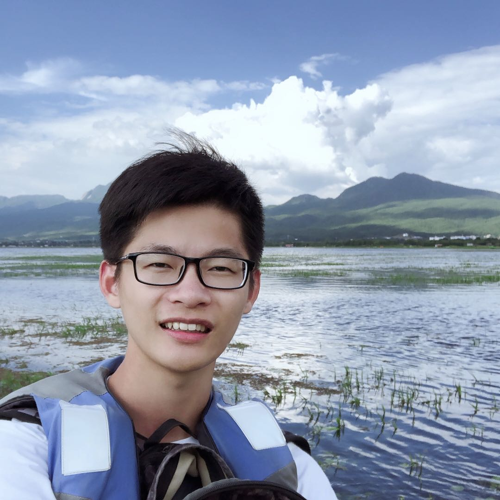

Zhiyu Min
闵志宇
MSCV (expected)
Carnegie Mellon University
Hi! I am a Master of Science in Computer Vision (MSCV) student at Carnegie Mellon University. I received my bachelor's degree from University of Science and Technology of China.
My interests broadly lie in Machine Learning, Computer Vision, Natural Language Processing and Recommender System. Generally I am interested in discovering the essence of Learning and exploring its applications.
I feel fortunate to have worked at Google, Alibaba, SenseTime and TuSimple.
I am graduating in December 2019 and actively looking for a full-time job!
Education
- Aug 2018 - Dec 2019 (Expected), Carnegie Mellon University
Master of Science in Computer Vision - Aug 2012 - Jul 2016, University of Science and Technology of China
Bachelor of Engineering in Computer Science
Experience
- May 2019 - Aug 2019, Google Ads
Software Engineer Intern with Wen Zhong, Youjie Zhou, Jia Chen and Mickey Wang
Incorporated image convolutional features in ad CTR prediction. Developed a large-scale visualization pipeline to retrieve the most similar images regarding query images. - Jan 2019 - May 2019, Carnegie Mellon University
Research Student with Prof. Srinivasa Narasimhan
Trained and evaluated vehicle detection model on real world intersection data. The model is modified from MaskRCNN,and achieves AP = 70% - 91% on different cameras. - Nov 2017 - Jul 2018, Alibaba Group
Software Engineer with Dr. Feng Ji at AliMe X-Lab
We are developing AliMe, a chatbot in e-commerce. Working on semantic textual similarity, transfer learning and natural language generation. - Sep 2016 - Nov 2017, SenseTime
Research Assistant with Prof. Dahua Lin
We proposed a probabilistic ensemble of recommenders, and strongly improved the baseline. - Nov 2015 - Aug 2016, TuSimple
Research Intern with Dr. Naiyang Wang
Worked on car driver's maneuver prediction, Ad CTR prediction and Recommender System. - Jul 2015 - Oct 2015, Purdue University
Visiting student to Visual Analytics Center. Worked on social media summarization.
Publication
- Learning to Selectively Transfer: Reinforced Transfer Learning for Deep Text Matching
Chen Qu, Feng Ji, Minghui Qiu, Liu Yang, Zhiyu Min, Haiqing Chen, Jun Huang and W. Bruce Croft
International Conference on Web Search and Data Mining (WSDM), 2019. [To appear] - Probabilistic Ensemble of Collaborative Filters
Zhiyu Min, Dahua Lin
AAAI Conference on Artificial Intelligence (AAAI), 2018. [pdf][arxiv] - A Visual Analytics Framework for Microblog Data Analysis at Multiple Scales of Aggregation
Jiawei Zhang, Ben Ahlbrand, Abish Malik, Junghoon Chae, Zhiyu Min, Sungahn Ko, David Ebert
Computer Graphics Forum (EuroVis), 2016. [pdf]
Miscellaneous
- Here is a presentation I gave at AliMe, about Generative Adversarial Network, Wasserstein Distance and Adversarial Loss.
- My name "Zhiyu" is so Chinese that it is always challenging to teach my foreign friends the correct pronunciation. The closest English version is like "zee-you".
- Learning in singing, guitar, photographing, snowboarding and skiing. Those are pretty much all the entertainments I have in the US lol.
- Fan of Kobe Bryant. Here is a photo when I went to watch the opening match in his last NBA season.